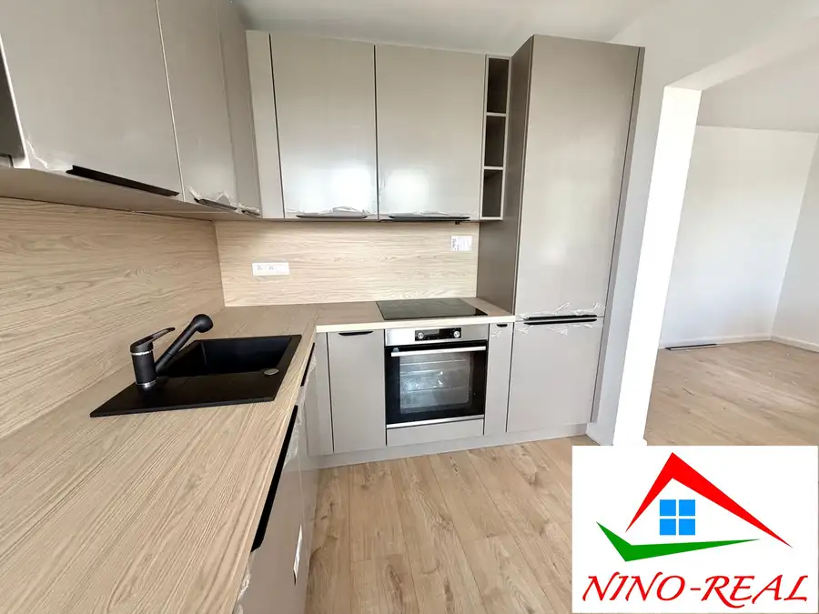
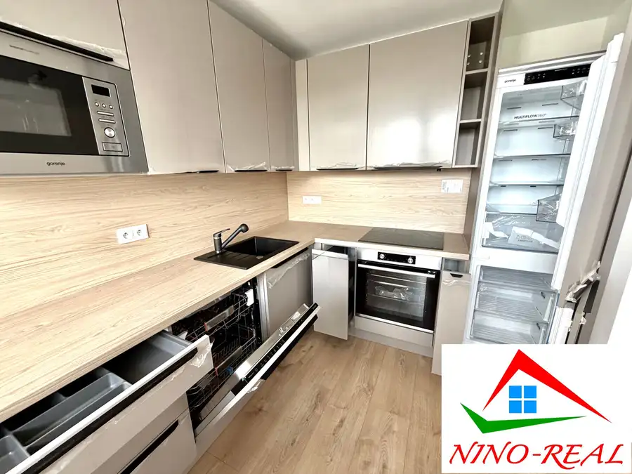
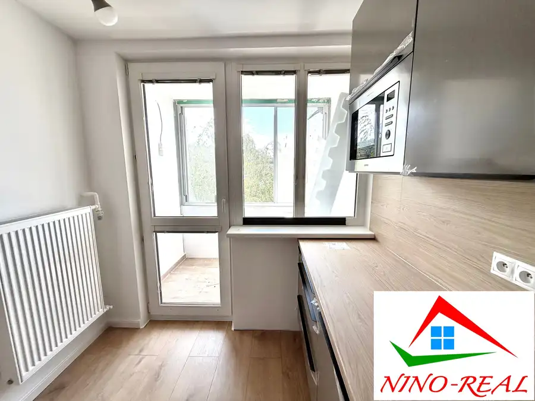
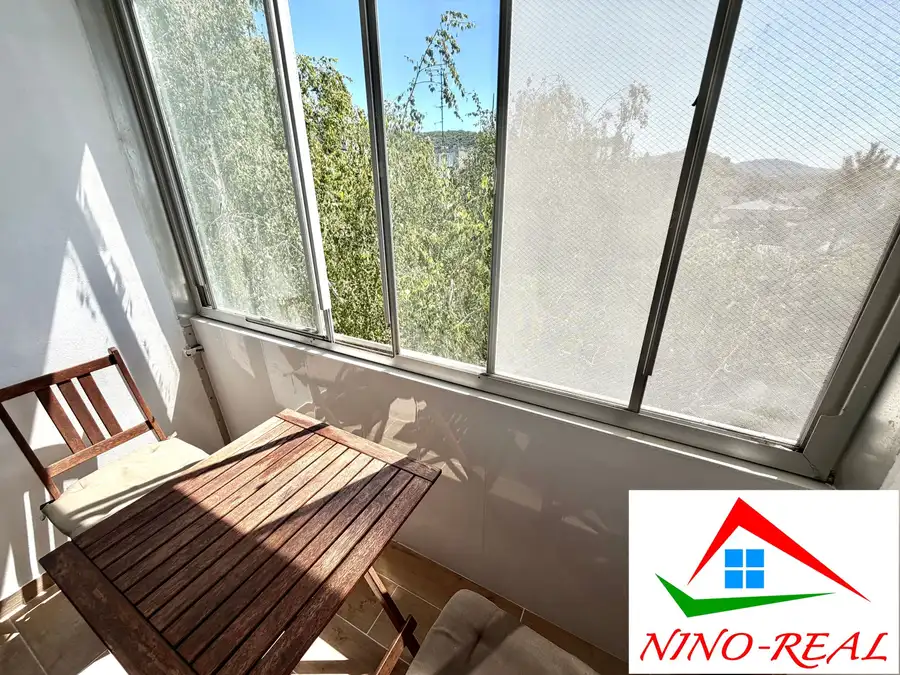
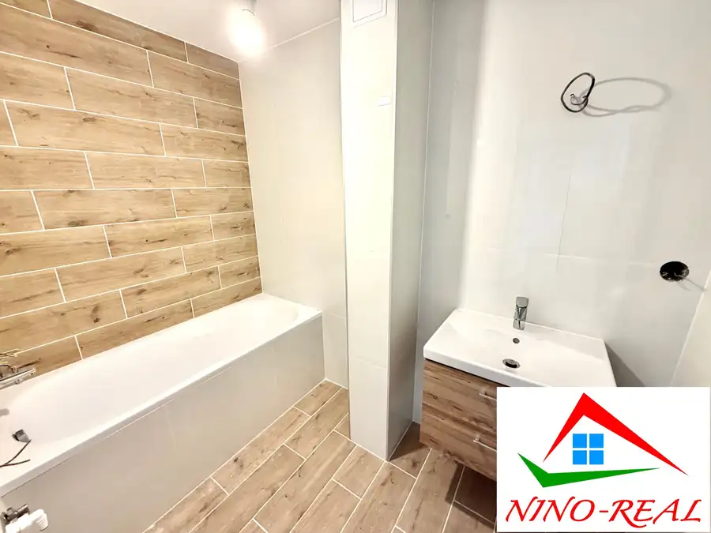
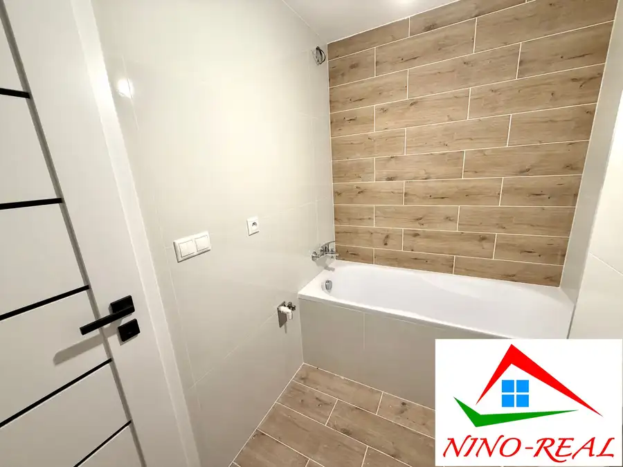
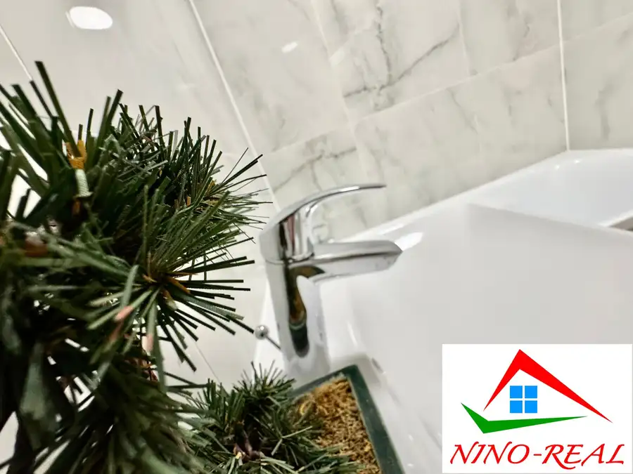

Hradištná – 4i byt s loggiou a novou kuchynskou linkou po kompletnej rekonštrukcii v tehlovom dome
Devínska Nová Ves, Bratislava







- Dispozícia4-izbový
- Plocha80 m²
- Poschodie2. z 2
- StavKompletná rekonštrukcia
- VlastníctvoFiremné
O nehnuteľnosti
POZRITE si TENTO 4i byt s PRIESTRANNOU MUROVANOU PIVNICOU (16,92 m2) a nízkymi mesačnými nákladmi. BYT sa nachádza v DEVÍNSKEJ NOVEJ VSI s perfektnými TURISTICKÝMI a ŠPORTOVÝMI možnosťami.V BYTE FINIŠUJEME S PRÁCAMI a tešíme sa na VAŠU OBHLIADKU:-)VÝHODY BYTUVÝMERA - byt má 63,22 m2 + LOGGIA o výmere 3 m2 + pivnica;MUROVANÁ PIVNICA - o výmere 16,92 m2 ponúka rôzne využitie, napr. pre domáceho majstra ako dielňa, na uskladnenie sezónnych vecí, sklad, posilňovňa, alebo je možné ju aj prenajať napr. ako dielňu pre krajčírku...;POSCHODIE - nachádza sa na 3. p./3 - bez výťahu; NÍZKE MESAČNÉ NÁKLADY - 140,- € + elektrina;NOVÁ KUCHYNSKÁ LINKA - so spotrebičmi - v cene;ĎALŠIE VÝHODY:- 3 samostatné nepriechodné spálne- samostatná kúpeľňa a WC- orientovaný je na tri svetové strany- nadštandardná výmera pivniceREKONŠTRUKCIA ZAHŔŇA:- kompletne nová elektroinštalácia v celom byte (s revíznou správou);- nové vypínače a zásuvky značky LEGRAND;- PREDPRÍPRAVA na klimatizáciu;- nové rozvody vody;- nové stierky a maľovky;- nové plávajúce - laminátové podlahy;- interiérové dvere, obložkové zárubne a moderné kľučky;- v kúpeľni nová dlažba, moderné obklady, vaňa a batéria so sprchovacím setom značky GROHE;- kúpeľňová skrinka s umývadlom a batériou značky GROHE;- WC – závesný podomietkový systém s keramickou misou a tlačidlom;TEHLOVÝ BYTOVÝ DOM - bol daný do užívania v roku 1969 a prešiel postupnou rekonštrukciou: výmera rozvodov SV a TV (2009), výmena odpadových potrubí (2011), zateplenie pivníc a plastové okná (2014), výmena vchodových dverí (2016), zateplenie bočných stien domu (2017), oprava a zateplenie strechy (2020), rekonštrukcia a montáž bleskozvodovej sústavy (2021);VÝHODY LOKALITYKOMPLETNÁ OBČIANSKA VYBAVENOSŤ - potraviny, gastroprevádzky, OC BORY MALL, cyklochodníky, ktorými sa dostanete cez CYKLOMOST SLOBODY až do Rakúska (Schlosshof) alebo na HRAD DEVÍN, turistické chodníka na SANDBERG, DEVÍNKU KOBYLU, VYHLIADKOVÚ VEŽU.DOSTUPNOSŤ - zastávky MHD v blízkosti;VEĽA ZELENE!CENA: 259 900,- €VRÁTANE PROVÍZIE a obchodno-zmluvného servisu.PROVÍZIA ZAHŔŇA kvalitné realitné a právne služby spojené s prevodom nehnuteľnosti:– vypracovanie kompletnej zmluvnej dokumentácie (zmluva o budúcej zmluve, rezervačná zmluva, zmluva o prevode vlastníctva bytu, návrh na vklad vlastníckych práv, prípadné dodatky, protokol o prevzatí a odovzdaní nehnuteľnosti…)– notárske poplatky spojené s overovaním podpisov predávajúceho na zmluve o prevode vlastníctva bytu– správny poplatok (kolok v hodnote 100,- €) spojený s návrhom na vklad vlastníckych práv– zabezpečenie promptného ohodnotenia nehnuteľnosti prostredníctvom znalca, ktorý je akceptovaný všetkými bankamiKONTAKT:PaedDr. Mgr. Ľubomíra BREZNAYOVÁ+421 948 666 298breznayova.ninoreal@gmail.comAj VY potrebujete PREDAŤ/PRENAJAŤ VAŠU NEHNUTEĽNOSŤ? Zabezpečíme VÁM kompletný obchodno-zmluvný servis a ponúkame bezplatné poradenstvo hypotekárneho špecialistu priamo u nás v kancelárii. AKTUÁLNU kompletnú ponuku vo VLASTNÍCTVE SPOLOČNOSTI Nino-real, s.r.o. si môžete pozrieť na stránke www.nino-real.sk
Parametre
- Cena vrátane energií
- Nie
- Druh
- 4 izbový byt
- Dátum zverejnenia
- 05. 05. 2026
- Energetický certifikát budovy
- nie je
- Podlažie
- 2
- Počet lodžií
- 1
- Počet nadzemných podlaží
- 2
- Počet pivníc
- 1
- Počet spální
- 4
- Rok výstavby
- 1969
- Stav nehnuteľnosti
- Kompletná rekonštrukcia
- Telekomunikácie
- Internet
- Typ
- Predaj
- Typ konštrukcie
- Tehlová
- Vlastníctvo
- Firemné
- Vybavenie
- Lodžia, Pivnica
- Úžitková plocha
- 80 m²
Kde to je


Mohlo by Vás zaujímať
 BytNové
245 900 €Hanácka - 2i byt po novej rekonštrukcii neďaleko avionu
Ružinov, Bratislava
2-izbový52.79 m²2. podlažie
BytNové
245 900 €Hanácka - 2i byt po novej rekonštrukcii neďaleko avionu
Ružinov, Bratislava
2-izbový52.79 m²2. podlažie
 BytNové
299 900 €Jadrová – 3i byt po kompletnej rekonštrukcii blízko parku v Ružinove
Ružinov, Bratislava
3-izbový74.78 m²1. podlažie
BytNové
299 900 €Jadrová – 3i byt po kompletnej rekonštrukcii blízko parku v Ružinove
Ružinov, Bratislava
3-izbový74.78 m²1. podlažie

BytNové 336 900 €Medená – 3i byt po rekonštrukcii v tehlovom dome blízko pešej zóny Staré Mesto, Bratislava 3-izbový59.45 m²1. podlažie